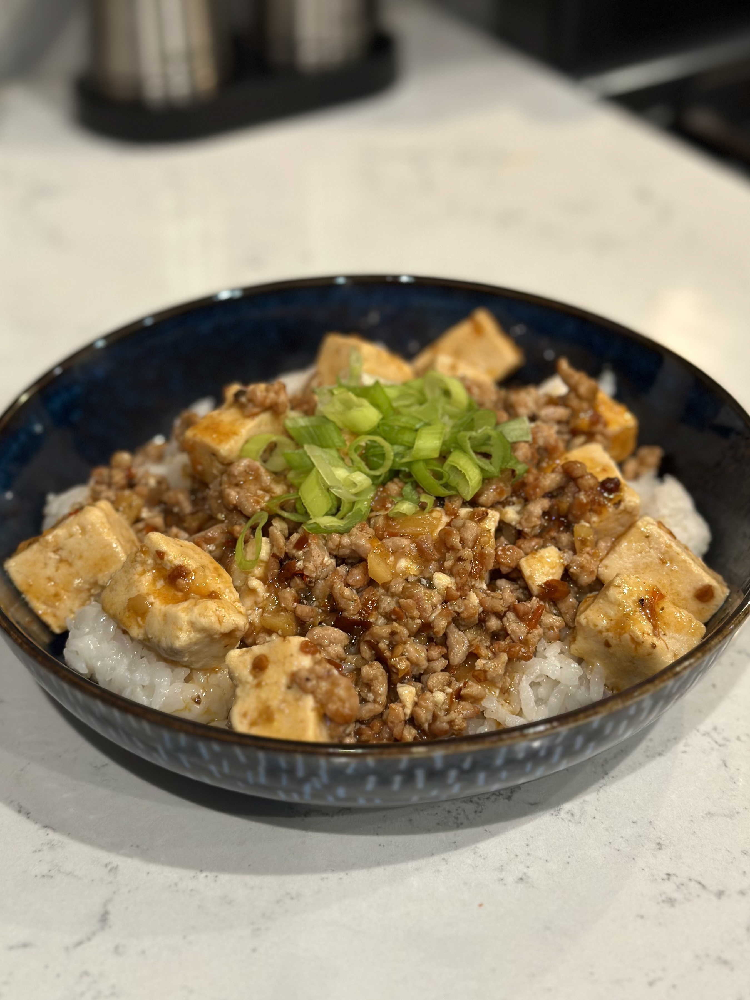
Mapo tofu.
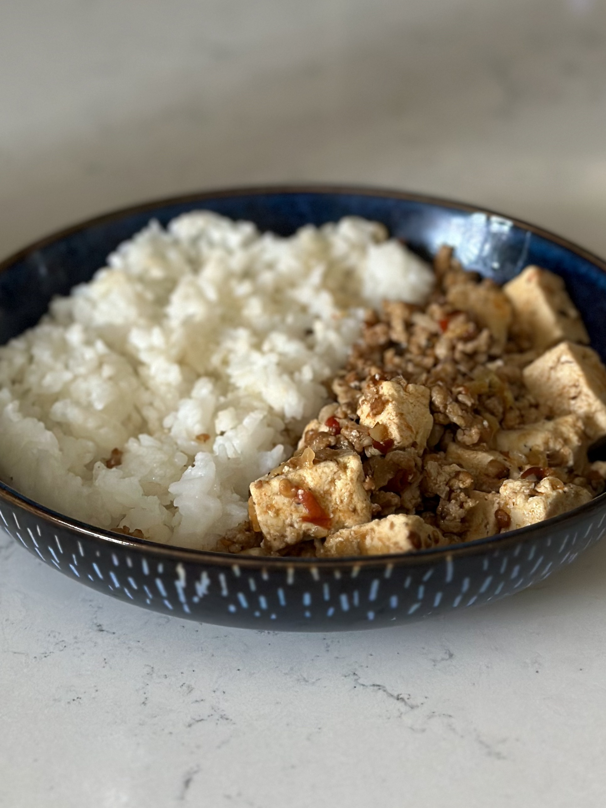
Mapo tofu served with white rice.
Overview
What is mapo tofu?
Mapo tofu (麻婆豆腐) is a famous dish from Sichuan cuisine consisting of tofu and minced meat cooked in a spicy, aromatic sauce. The sauce is commonly made with ingredients such as doubanjiang, fermented black beans, chiles, and Sichuan peppercorns, giving the finished dish its characteristic red color and combination of chile heat and the numbing sensation produced by the Sichuan pepper. Traditional versions are commonly associated with minced beef, although pork and meatless variations are also widespread.
Origin and History
Mapo tofu originated in Chengdu, the capital of China's Sichuan province, during the Qing dynasty. One commonly cited account dates the dish to 1862 and a small restaurant near Chengdu's Wanfu Bridge operated by a couple surnamed Chen. According to the story, laborers and oil porters who passed through the area would bring ingredients such as tofu and beef to the restaurant, where Mrs. Chen developed a distinctive way of cooking them together. Her tofu became locally famous, and the restaurant eventually became known for the dish.
The name mapo tofu is traditionally connected to Mrs. Chen herself. Ma (麻) in this context refers to the pockmarks on her face, while po (婆) refers to an older woman, giving the name a meaning roughly equivalent to "pockmarked old woman's tofu." The dish's reputation spread beyond the restaurant, and Chengdu Records, published in 1909, reportedly listed Chen Mapo Tofu Restaurant among Chengdu's well-known restaurants. Today, mapo tofu has spread far beyond Sichuan and has become one of the region's most recognizable dishes.
Flavor and Characteristics
Mapo tofu is known for being much more than simply spicy. Two of its defining sensations are má, the tingling or numbing sensation produced by Sichuan peppercorns, and là, the heat produced by chiles and chile bean paste. These are balanced with salty, savory, aromatic, and umami flavors, while the soft tofu contrasts with the texture of the minced meat.
Traditional descriptions of mapo tofu identify seven important characteristics: má (numbing), là (spicy), tàng (hot), xiān (fresh), nèn (tender), xiāng (aromatic), and sū (crisp or flaky). Together, these emphasize that a good mapo tofu depends not only on intense seasoning, but also on temperature, aroma, texture, and the tenderness of the tofu.
Traditional and Contemporary Ingredients
The basic components of mapo tofu are tofu, minced meat, chiles, Sichuan pepper, and fermented bean products. Doubanjiang, a fermented chile and broad-bean paste strongly associated with Sichuan cooking, provides much of the sauce's saltiness, heat, and red color, while douchi, or fermented black soybeans, can contribute additional savory and fermented flavor. Sichuan peppercorns provide the characteristic numbing sensation that distinguishes the dish from one that is simply hot.
Although beef is strongly associated with traditional Chengdu-style mapo tofu, modern versions frequently use pork instead, and vegetarian versions may replace the meat with mushrooms or other ingredients. Recipes also vary in their choice of tofu and the intensity of their seasoning, particularly outside Sichuan, where the chile heat and numbing qualities are sometimes reduced.
Recipe
Ingredients
- 3 g each red and green Sichuan peppercorns[1]
- 5 g dried red chiles[2]
- 450 g ground beef[3]
- 450 g firm tofu
- 1 inch knob of ginger, finely minced
- 3 cloves garlic, finely minced
- 2 tbsps doubanjiang
- 1 tbsp douchi (optional)
- 700 g water
- 2 tbsp cornstarch (optional)
- Salt, sugar, and MSG to taste
Directions
- In a large, lightly oiled pan, fry the red chiles and peppercorns until they are toasted and fragrant, being careful not to burn them. Remove from heat and chop into a coarse powder.
- Add the ground beef to the pan and cook until the meat starts to form a crust.
- While the meat is cooking, cut the tofu into 1-inch cubes. Then, bring a medium pot of lightly salted water to a boil and blanch the tofu for about 60 seconds, just long enough to firm it up. Drain and set aside.
- Once the meat is cooked, mix in the ginger and garlic and fry until aromatic. Then, stir in the doubanjiang and douchi and fry briefly before adding in the peppercorn and chile mix. The amount of this mix that you add is up to you, but it can get pretty hot pretty fast.
- Fry until the oil begins to turn red, then pour in 3 cups of water and add the blanched tofu. Let simmer for around 10 minutes. During this time, you can create a cornstarch slurry by combining the cornstarch with an equal amount of water, then stirring into the base to thicken it.
- Once the dish has reached your desired thickness, remove from heat and season to taste with salt, sugar, and MSG. Serve over heaps of white rice and top with sliced green onion.
Notes
- Or any mix of the two. If you only have red peppercorns, you can simply use 6 grams of these. Or if you prefer green, you can use more.
- I tend to use chiles de árbol because they are convenient for me, but you can use any chile that you like the flavor and heat level of.
- Ground pork or even ground chicken will work as well. You can also try using finely chopped mushrooms instead.
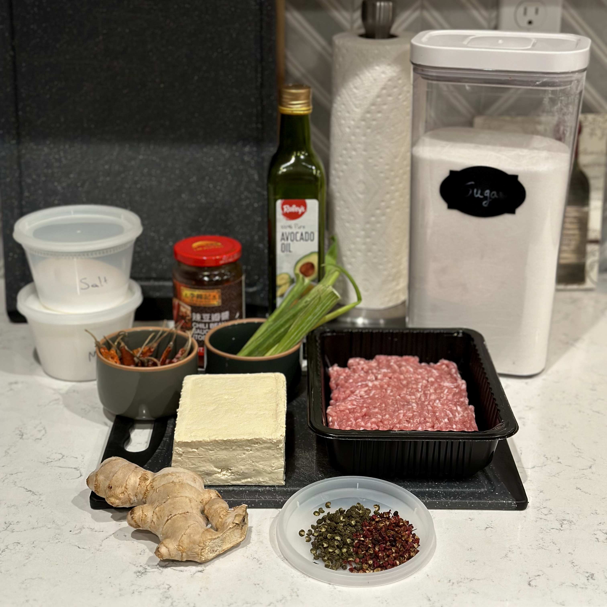
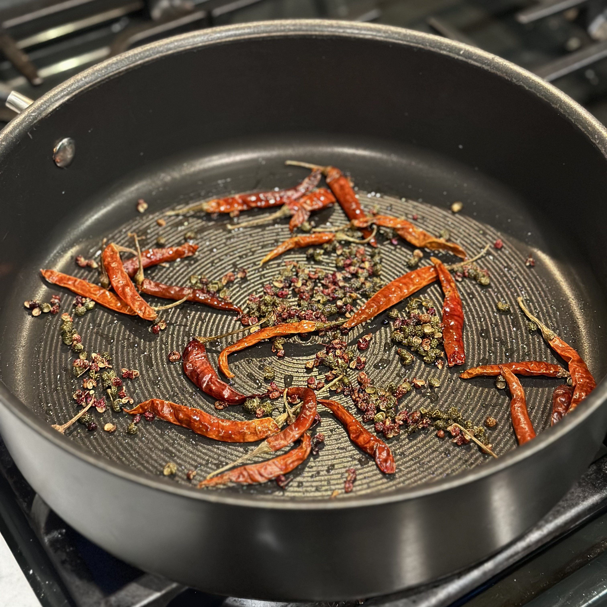
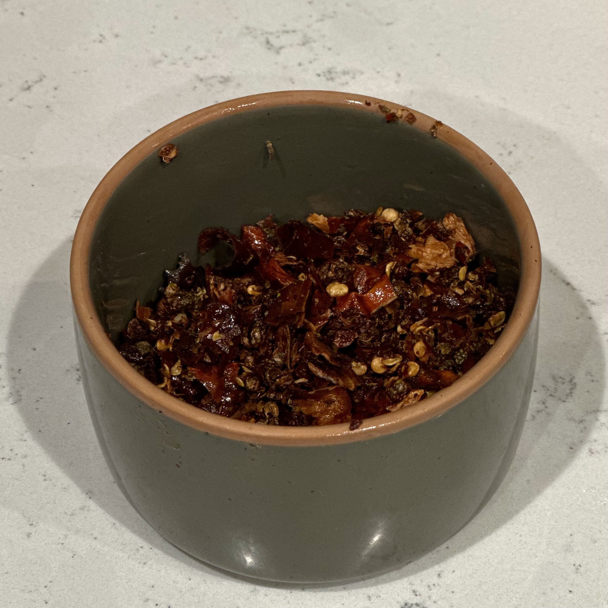
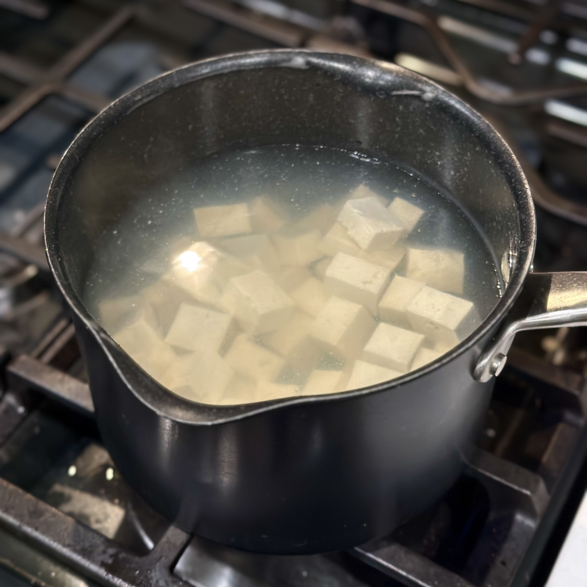
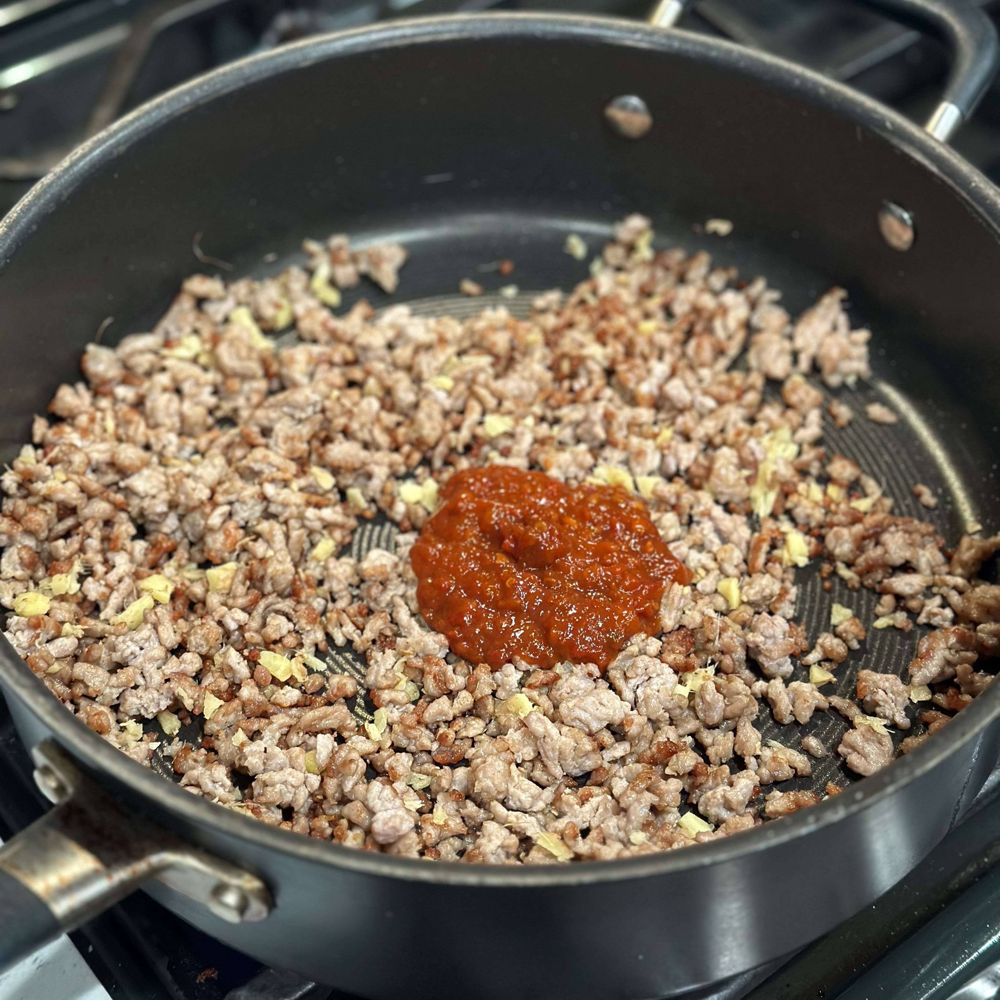
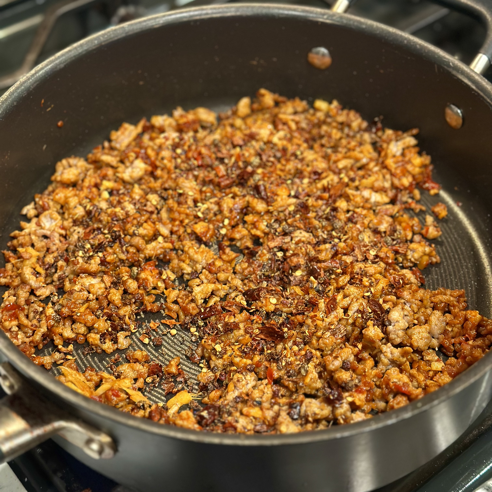
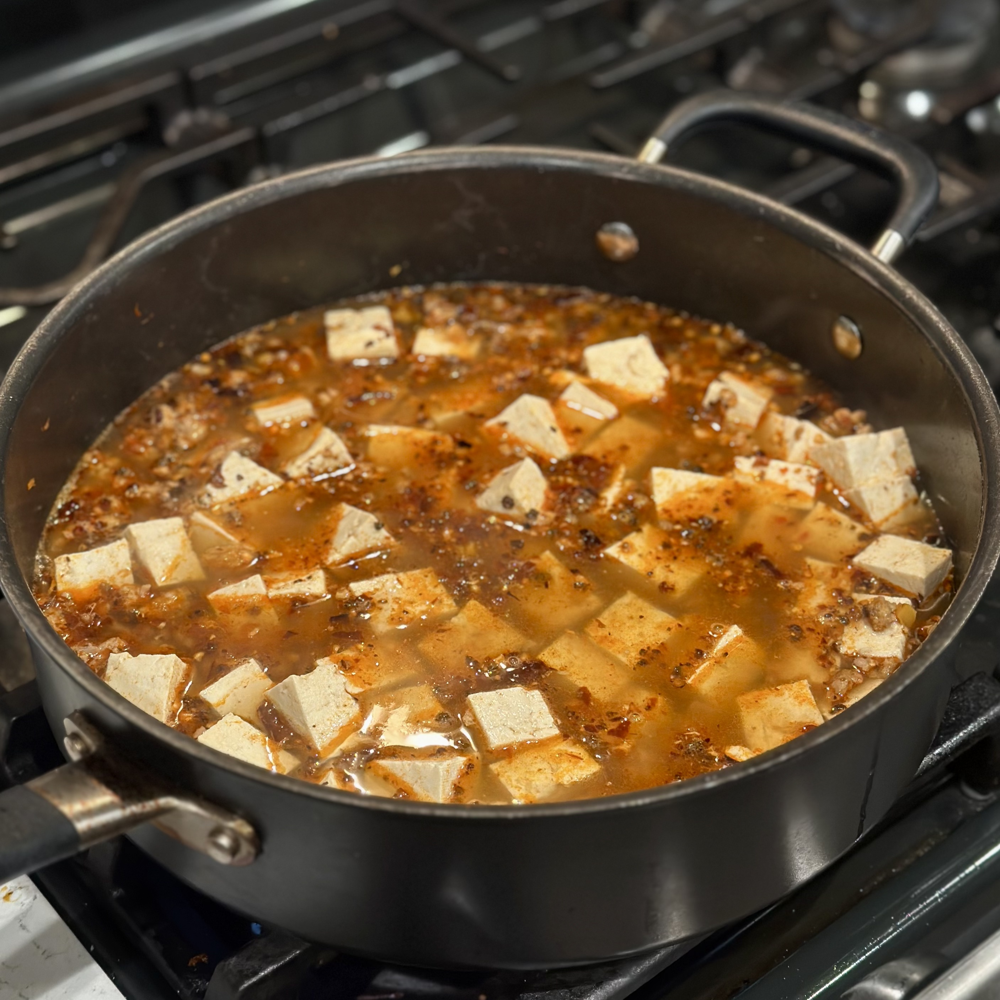
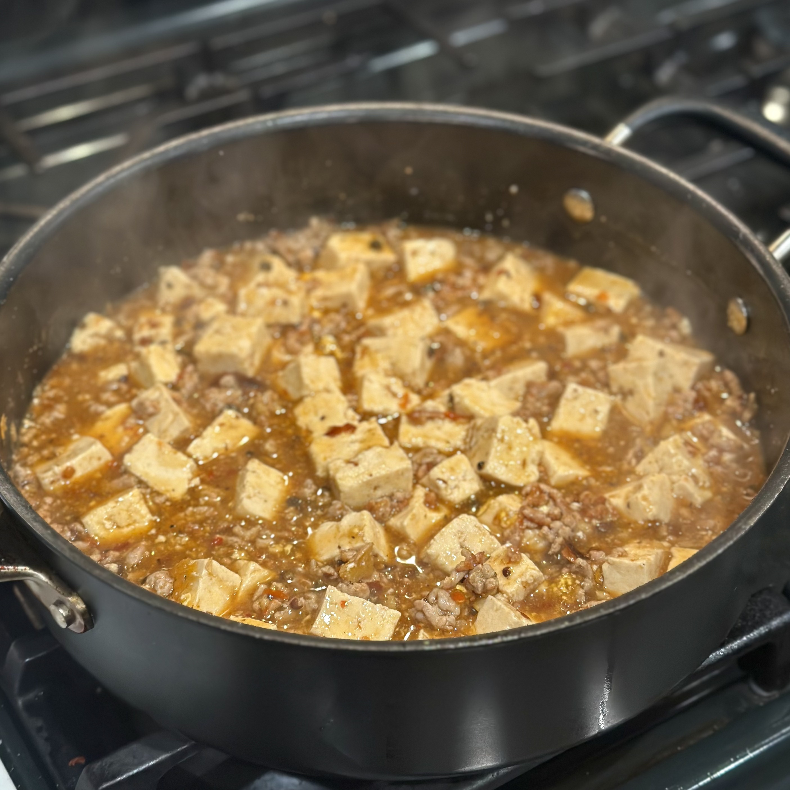
See Also
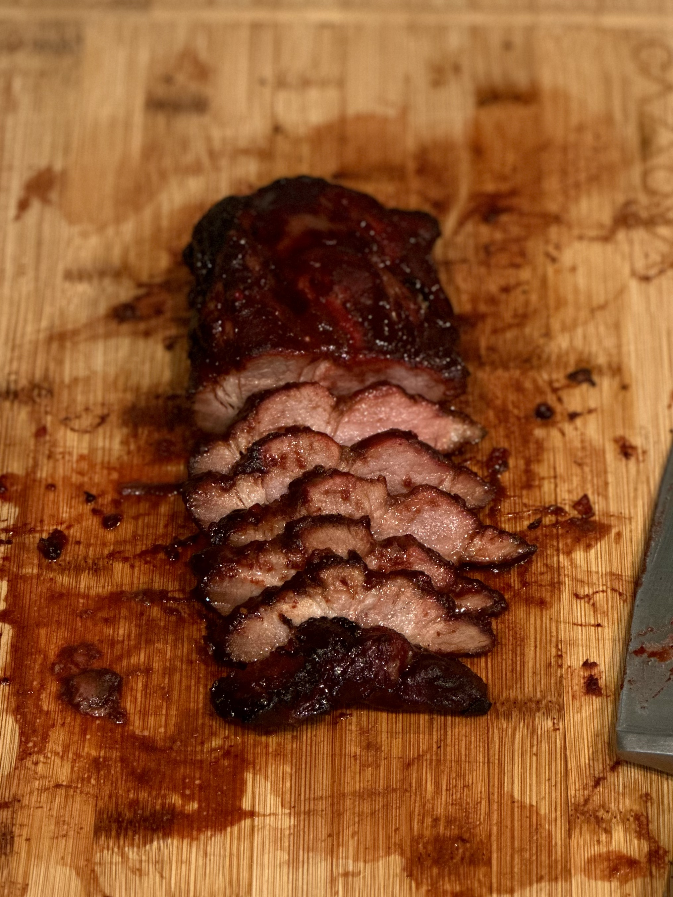
Char SiuReferences
- Dunlop, Fuchsia. The Food of Sichuan. First American ed., W. W. Norton & Company, 2019, pp. 244-245.
- “The Making of Mapo Tofu.” China Daily, chinadaily.com.cn/a/201509/05/WS5a2b45bda310eefe3e99f4b8.html. Accessed 18 Aug. 2026.
- “What Is Mapo Tofu and Where Did It Get Its Ugly Name?” South China Morning Post, scmp.com/magazines/style/leisure/article/3195193/what-mapo-tofu-and-where-did-it-get-its-ugly-name-top-hong. Accessed 30 Aug. 2026.